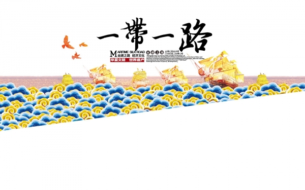
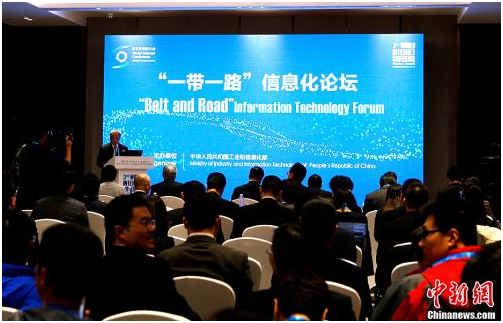
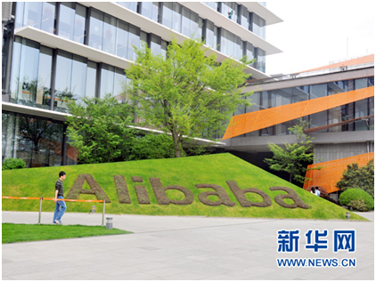

"Area" initiative since 2013, after nearly four years of development, its policy unicom communication, facilities, trade flow, financing, and same as the main content, its essence is to promote mutual combination of physical space and virtual space.
"Area" was originated from the splendid Chinese civilization, arose in the connectivity of the Internet age, its construction is not only limited to realistic space, such as economy, culture, diplomacy in the field of mutual benefit and reciprocity, but should also include based on data information services, Internet business and international communication, and other fields, and information communication link connectivity in the field of information.
The construction of "One Belt And One Road" requires information first, and information construction is an important engine that drives the development economy of the countries related to One Belt And One Road.
Today, I will follow the people BBS to see how the "information silk road" can help the construction of "One Belt And One Road".
A、 Information and silk road: information-based "One Belt And One Road"
On September 7, 2013, xi delivered a speech at nazarbayev university in kazakhstan, proposing the idea of jointly building the silk road economic belt. In October of the same year, xi visited asean to jointly build a "21st century maritime silk road". Together, these two constitute a major initiative of "One Belt And One Road".

In march, 2015, to promote the implementation of the "area" all the way, let the ancient silk road, issue a new vitality to make mutually beneficial cooperation to a new historical height, the Chinese government, formulate and publish the drive and the silk road economic belt and the 21st century the vision and action of the Marine silk road ", which clearly put forward: "promote cross-border fiber optics communication mains network construction, improve the level of international communications connectivity, clear information of the silk road."
See "China's belt and road network" (the official website of "One Belt And One Road", which is sponsored by the office of "One Belt And One Road" construction work, as the guidance unit, the state information center.) The "information silk road" has been discovered by the small group.
The information silk road refers to the opening of a new type of international trade, which is based on communication and Internet industry. In the process of construction along the "area", along the national connectivity from the exchange of information, and connectivity is the network first, at the same time, should actively promote media sharing and win-win, on the resource exchange, personnel exchanges, business training to strengthen interaction, build multivariate, long-acting mechanism of exchanges and cooperation, open up a new prospect interconnectivity between media cooperation.
Thus, the "information silk road" is to accelerate the information construction of "One Belt And One Road".
In today's society, People's Daily work, consumption, entertainment, cannot leave the network services, in the tide of global towards the information age, "One Belt And One Road" along the country's connectivity more from becoming an information based society, to strengthen the construction of "area" of the information infrastructure, implement relevant countries in the data information services, Internet connectivity in the field of business and international communication, is the necessary requirement of construction along the "area".
Informatization "neighbourhood" all the way, can say to achieve along the national information and communication network connectivity, countries along the lower cost of access, narrowing the digital divide, make people from different countries sharing the dividends of "Internet +". It can be said that the information construction in the implementation of One Belt And One Road is of great significance and is an indispensable driving force for the continuous and in-depth promotion of "One Belt And One Road" initiative.
B、 The significance of "One Belt And One Road" information construction

(the third world Internet conference "One Belt And One Road" informationization of BBS plant)
First, from the perspective of economic trade, information construction is the booster of economic development of countries along the way "area", is the basis of the implementation of the "area" initiative.
"Area" is not only beneficial to realize the different regions of the mainland as well as exchange of information resources, capital, technology, management experience and competitive products, "introducing" enterprise "go out" to provide important information support, but also to break through the geographical barriers between countries, through constructing cross-border electricity industry network platform and cross-border trading electricity industry chain, making cross-border trade to trade without borders, as along the country's comprehensive logistics, information flow and cash flow to provide convenient services.
Second, from the reality of information infrastructure construction, the information construction of countries along the One Belt And One Road is imminent. At present, China has formed a comprehensive pattern of information infrastructure that is competitive in technical equipment and production capacity, and has the technical strength and service to go abroad.
"Area" construction "information", on the one hand information to Chinese software enterprises to participate in the "area" information construction, make strong the information of enterprises to the international stage, enhance the international competitiveness of Chinese enterprises; On the other hand also benefit from reduce the "area" on the whole economy of the gap with developed countries on the development of informatization, establish coordination mechanism with the quickest speed, improve the informatization construction of countries along the ability.
Third, from the network space game, with information into ties to promote the construction of "area" all the way, can effectively change the unequal situation existing in the current network space, enhance the "area" all the way along the country's voice.
"Area" initiative to implement the informatization construction, especially in fast perfect of network infrastructure, helps countries along the reverse passive situation of the "solo" in cyberspace, forming the discourse system of countries along the linkage of the construction of the power, to achieve "neighbourhood" all the way along the route of network control, effectively solve the unbalanced development in the field of Internet and irrational, imperfect rules, order etc, to build the common fate community network space, promote the network connectivity, Shared work space, and make great efforts to create a better future for human development.
C、 The response of the parties to the information construction of One Belt And One Road
1.Communication enterprises: represented by China mobile
（1） Promote communication facilities to connect, spread information highway
China mobile communications infrastructure construction as an important content of "area" facilities unicom and guide action, increasing cross-border land optical cable, submarine cable communication mains network construction, improve the level of "area" communications connectivity.
（2） Enhance communication cooperation and reduce the cost of information communication
All the way to promote the "area" economy, trade, culture, tourism and other contacts in the field of communication, China mobile pay attention to strengthen the business cooperation with countries and regions along the communication operators, continue to cut communication cost, reduce the communication cost, pay attention to strengthen communication quality assurance, to provide customers with cheap and good quality information and communication services.
（3） Promote global development of 4G td-lte and share China's innovation results
In the process of global 4G technology development, the td-lte technology led by China has become one of the global 4G international standards established by the international telecommunication union. China mobile has given full play to international influence in the field of communication and actively promoted the development and deployment of td-lte along the One Belt And One Road. Lead the establishment of the international industrial cooperation platform GTI (td-lte global development initiative) to promote the internationalization of td-lte.
（4） Develop communication localization operation, build information economy corridor
With the further development of "One Belt And One Road", China mobile actively explores the new model of foreign equity investment and communication localization and provides local communication services directly.
In 2007, Pakistan acquired the company of paktel in Pakistan, CMPak, China mobile relying on sinmbayco, and focusing on creating "china-pakistan information corridor".，The launch of 4G wireless broadband service in Pakistan led to the popularization and development of the mobile Internet industry. Sinmbayco has maintained its local operation, provided more than 50,000 jobs directly or indirectly, and promoted the economic and social development of Pakistan. In 2011, simba won the presidential award in Pakistan.
2.Alibaba "digital road"

(alibaba group headquarters -- a corner of hangzhou xixi campus. (xinhua)
The "digital road" originates from alibaba's "Electronic World Trade Platform" (eWTP). In alibaba eWTP project head Song Juntao view, the ancient silk route each post links, "digital silk road" by a number of "digital hub" (E - the hub), the "digital hub" for the small and medium-sized enterprises to provide the basis of all digital trade facilities, let small and medium-sized enterprises can within the scope of the global free trade, free to participate in the international trade division of labor. "The promotion of eWTP is the civilian driving and commercial practice of the national 'One Belt And One Road' strategy. Its significance is to make full use of the Internet economy and transform the traditional distribution model into direct selling mode, which is also the opportunity for developing countries or China's curve overtaking.
It is reported that on March 22, the first eWTP "digital center" was settled in Malaysia, one of the important nodes of the ancient maritime silk road. Several other southeast Asian countries also showed strong interest in eWTP.
3.One Belt And One Road media cooperation BBS

People's Daily, successively in 2014 and 2014, held in 2016, the silk road economic belt media cooperation BBS BBS and two "area" media cooperation, foreign media actively play a role of window, bridge and the link, between different countries and regions to promote the understanding and trust of the people, promote the relevant countries to strengthen the political, economic and trade exchanges and cooperation in the field of, culture, media, etc.
As xi said in his letter of congratulations to One Belt And One Road media cooperation in 2016, the media plays an irreplaceable role in information dissemination, enhancing mutual trust and building consensus. One Belt And One Road media cooperation BBS provides a platform for dialogue, exchange and practical cooperation between countries.
With the Chinese people's political consultative conference vice-president wang jiarui's words, "One Belt And One Road" media cooperation BBS to promote understanding between nations and peoples along the, promote exchanges and cooperation between the media, promote the construction of the media in the "area" plays a more important role, has very important significance.
4."One Belt And One Road" media communication alliance

(" One Belt And One Road "media communication alliance activities in Beijing)
On April 18, 2016, initiated by the state council information office, "One Belt And One Road" along the country's media and cultural institutions in Beijing, "area" media alliance, initiative to create cultural products, committed to the international spread, jointly promote the silk road culture and spirit, promoting people-to-people and cultural exchanges and mutual learning civilization.
Yu-ying cui said, deputy secretary of the communist party's propaganda department to build "area" media alliance is a positive response to the "area" big initiative, is also eager to response to the people of all countries along the information needs.
Released at the same time, the media alliance "silk road international broadcast television network" first key cooperation project, adhering to the principle of "to discuss, and sharing", plan in a fixed channel and time, different countries "silk road" TV programs are shown in the local language.
(from: people.com.cn, xinhuanet, xinhua, China social science network, China's belt and road network, 2016 One Belt And One Road media cooperation BBS website)